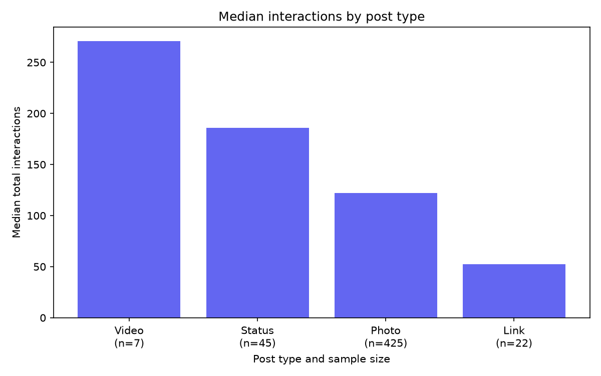

דוח ראשוני לניתוח ביצועי פוסטים
מספר פוסטים: 499
מספר עמודות: 7
מקור: UCI Facebook Metrics
מדד הביצועים הוא מספר האינטראקציות הכולל, ולא שיעור מעורבות ביחס לחשיפה.
| post_count | median_interactions | mean_interactions | |
|---|---|---|---|
| post_type | |||
| Video | 7 | 271.0 | 295.9 |
| Status | 45 | 186.0 | 217.0 |
| Photo | 425 | 122.0 | 216.8 |
| Link | 22 | 52.5 | 89.0 |

חשוב להשוות גם את מספר הפוסטים בכל קבוצה. תוצאה המבוססת על מעט פוסטים מחייבת זהירות.
| total_interactions | |
|---|---|
| count | 499.0 |
| mean | 212.3 |
| std | 380.6 |
| min | 0.0 |
| 25% | 71.0 |
| 50% | 124.0 |
| 75% | 229.0 |
| max | 6334.0 |
count — מספר הפוסטים; mean — ממוצע; std — סטיית תקן; min ו־max — מינימום ומקסימום; 50% — חציון; 25% ו־75% — הרבעון הראשון והשלישי.
זהו מדגם היסטורי מעמוד Facebook יחיד. ההשוואה אינה מנטרלת הבדלים במימון ובתזמון, ואינה מוכיחה שסוג הפוסט גורם להבדל בביצועים.